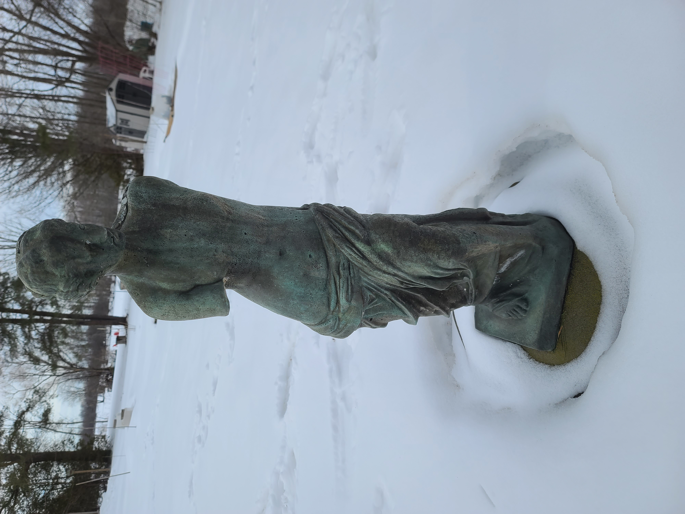

PHOTOGRAMMETRY - STATUE OF A WOMAN (2023)
This is a personal project where I generated a photogrammetric model of a statue using terrestrial photography. My smartphone camera's burst shot mode allowed me to take around 700 photos while I circled the statue. After processing the images with Agisoft Metashape, I found it surprising how well my 3d model looked compared to the original, as all my photos were taken within minutes.
